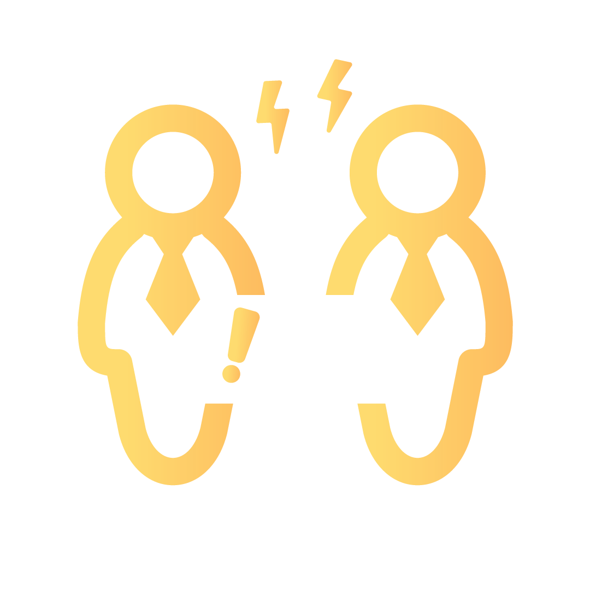

I'm a data professional with a multifaceted skill set as an analyst, engineer, and scientist. Currently pursuing my Master’s in Data Analytics at San Jose State University, I bring over two years of industry experience, including impactful roles at Core Molding Technologies, JoulestoWatts, and Infosys.
My experience encompasses designing ETL processes, optimizing data pipelines, creating interactive dashboards, and applying machine learning and AI techniques to solve complex problems. Additionally, as a Microsoft Certified Power BI Data Analyst, I am well-versed in extracting valuable insights to drive strategic decision-making.
Proficient in SQL, Python, and Power BI, I focus on building data-driven solutions that enhance operational efficiency and business intelligence. I’m committed to leveraging data to unlock new opportunities and foster a more informed, analytics-driven approach within organizations.
What I Do
Data Engineering
Designing and building pipelines to collect, store, and analyze large amounts of data for business use.
Data Analysis
Extracting and interpreting valuable insights from large datasets to drive informed decision-making.
Machine Learning
Designing and implementing advanced machine learning models to solve complex problems.
Generative AI
Crafting cutting-edge, AI-driven designs that set the standard for professional excellence.
What I bring to the Table
Collaboration
I thrive in collaborative environments, as seen in my work at JoulestoWatts, where I implemented role-based access controls, working closely with team members to enhance data security and streamline report sharing for 200+ employees.
Communication
Effective communication has been essential in my roles, particularly at Core Molding Technologies, where I translated complex data findings into accessible insights, enabling senior management to make informed financial decisions.
Leadership
As an organizer at Google Developers Group (GDG), San Jose, and the secretary at the Jain Youth Federation, I've honed my leadership and organizational skills. Leading my final capstone project during my Master’s program, I also coordinated a team to execute a comprehensive data analytics solution, ensuring successful project outcomes.

Problem Solving
I bring a strong analytical approach to problem-solving, using data-driven insights to address challenges effectively. Whether optimizing data pipelines at Infosys or streamlining reporting processes at JoulestoWatts, I prioritize understanding the root cause, leveraging data analysis, and implementing sustainable solutions to drive continuous improvement.
Teamword
As an Associate Consultant at Infosys, I learned the critical importance of fostering effective collaboration within cross-functional teams. During a high-pressure project, we faced a challenging deadline that required the seamless integration of diverse skills and expertise across the team. By cultivating strong working relationships and leveraging each team member's strengths, we not only met the project's objectives but exceeded client expectations. This experience underscored the power of teamwork and collaboration in driving successful outcomes, reinforcing the value of a well-coordinated team effort in achieving ambitious goals.
Resume
Education
San Jose State University
Master of Science in Data Analytics
January 2023 — December 2024
My master's program at SJSU is deepening my technical expertise and analytical skills, with a strong focus on data analytics, deep learning, and Generative AI (GenAI). This journey is enhancing my ability to tackle complex data-driven challenges, explore cutting-edge AI technologies, and develop innovative solutions that drive impactful insights.
Visvewaraya Technological University
Bachelor of Engineering in Computer Science
August 2016 — Sept 2020
My undergraduate studies at VTU provided a strong foundation in computer science and engineering. I actively participated in collaborative projects, which helped me develop my problem-solving, communication, and teamwork skills while applying theoretical knowledge to real-world applications in software development and data analysis.
Experience
Teaching Assistantships (TA)
Department of Applied Sciences-SJSU, San Jose, California
August 2023 — Present
As a Teaching Assistant at San Jose State University, I delivered weekly instruction to 80+ students with practical demos, boosting class enrollments by 17% in the second semester. I graded assignments almost 30% ahead of schedule every time and established an on-demand office-hour model for greater student convenience.
Data Engineer and Data Analyst Consultant
Core Molding Technologies Inc., Columbus, Ohio
Jul 2022 — Jan 2023
As a Data Engineer and Data Analyst Consultant at Core Molding Technologies Inc., I helped build an end-to-end data warehouse infrastructure with SSIS, enhancing data integration performance by almost 30%. I deployed three ad-hoc PowerBI dashboards using data from this established warehouse, boosting everyday report consumption by over 25%. I transitioned six existing Tableau finance reports consumed by upper management to PowerBI, utilizing the superior features of PowerBI.
Business Analyst and Power BI Developer
JoulestoWatts Business Solutions, Bengaluru, India
July 2022 — January 2023
As a Business Analyst and Power BI Developer at JoulesToWatts, I moved the company reporting and analytics infrastructure to Power BI, creating four automated dashboards with 2 KPIs delivered to stakeholders. I implemented role-based access control to enhance data security for 200+ employees, reducing unauthorized access incidents by 50%. I boosted report consumption by 12% QoQ within three months of joining with an optimized report distribution strategy and live dashboarding.
Systems Engineer-Azure Data Factory and SSIS
Infosys Limited, Bengaluru, India
September 2019 — June 2022
As a Systems Engineer at Infosys Limited, I piloted ETL operations on parquet files using Azure Data Factory, ensuring high data integrity by reducing data transfer errors by 50%. I optimized data pipelines using Azure DevOps Services, resulting in a boosted performance of 20%. I minimized downtime by 23% by eliminating refresh bottlenecks and enhanced data loading with a shorter and wider pipeline.
Business Intelligence Analyst Intern
Infosys Limited, Mysore, India
September 2019 — June 2022
As a Business Intelligence Analyst Intern at Infosys Limited, I automated four everyday reporting tasks using Power Flow, saving the team 15 minutes daily. I helped validate the data after collection and ad hoc Excel reporting as required.